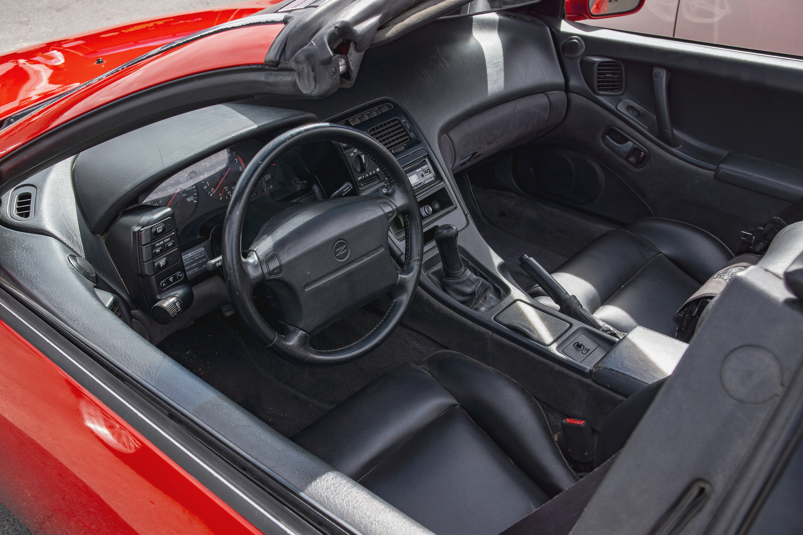

Nissan 300ZX Interior
Car Show in Rexburg
This was when I went to a car-show in Rexburg, Idaho. Where I reside for school. I was drawn to the show by a Facebook post in a group. It was an absolute blast to see the cars there. It certainly was small, but it was mighty. There were some really cool cars, one of which I shot the interior of. A Nissan 300ZX. It caught my eye immediately, this generation of Japanese cars were iconic. I took this photo and I love the composition of it as well as the clarity.